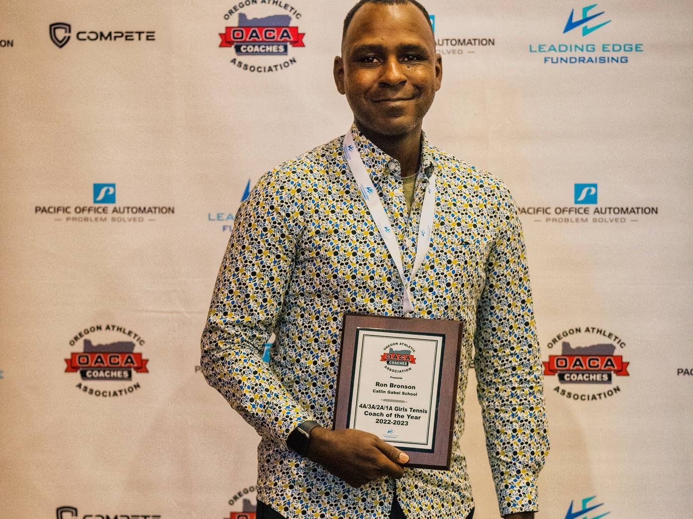
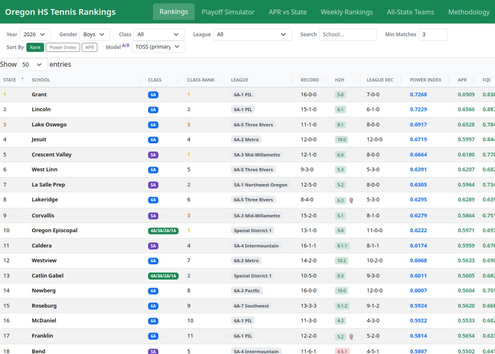

Coaching
Ron Bronson enters his tenth season as a high school tennis coach, with a career varsity record of 91-33-4 across programs in three states.
As one of Oregon’s two state tennis co-chairs, he led the redesign of the state team tournament. For the past five years he has owned oregontennis.org, building it into the most advanced high school tennis ranking system in the country.
In 2026 Oregon adopted a dual team tennis championship, the first expansion of its state tournament since 1946. It debuts in spring 2027 with brackets seeded from his power rankings: 12 teams at 6A and 8 each at 5A and 4A to 1A, per gender. The higher seed hosts each round through to a final at the state championship site.
That system, which he built end to end, carries four years of match data and four rating models he wrote, with an analytics layer (Power Index, FWS, FWS+, TOSS) that covers every classification in the state.
His teams have won a state championship, four District and Regional titles, and five Conference titles. Four of his players have won individual state championships.



Early on I noticed players looking at me in crucial moments when their eyes should’ve been on the court. I vowed to instill a level of confidence in them that even when their decisions don’t work out, they can learn to trust themselves. On changeovers, I’m very often saying “I trust you.”
Writing on coaching
On Developing Leaders
When it’s possible, I like finding parallels between managing people in professional environments with the early-stage development of young leaders as a high school tennis coach.
I Built a Power Ranking for Oregon High School Tennis
I’ve owned oregontennis.org for five years.
On Adapting My Coaching Philosophy
Coaching interviews at the high school and small college level, mostly relate to your philosophy.
Why I Keep Coaching
Players have to earn trust, but I like building a culture where players have agency to help direct their practices.
Naming the courts
During my senior year, my high school tennis coach and I were talking about our season and his legacy.